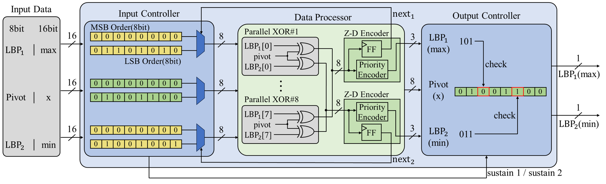

01
VLSI / SoC / 3D IC Design Technology
- Parallel Processing: Biomedical Processor, High-Performance Computing (HPC)
- Artificial Intelligence (AI): AI accelerator, Deep Neural Network
- Reliability: Automotive IC, High-Bandwidth Memory (HBM)